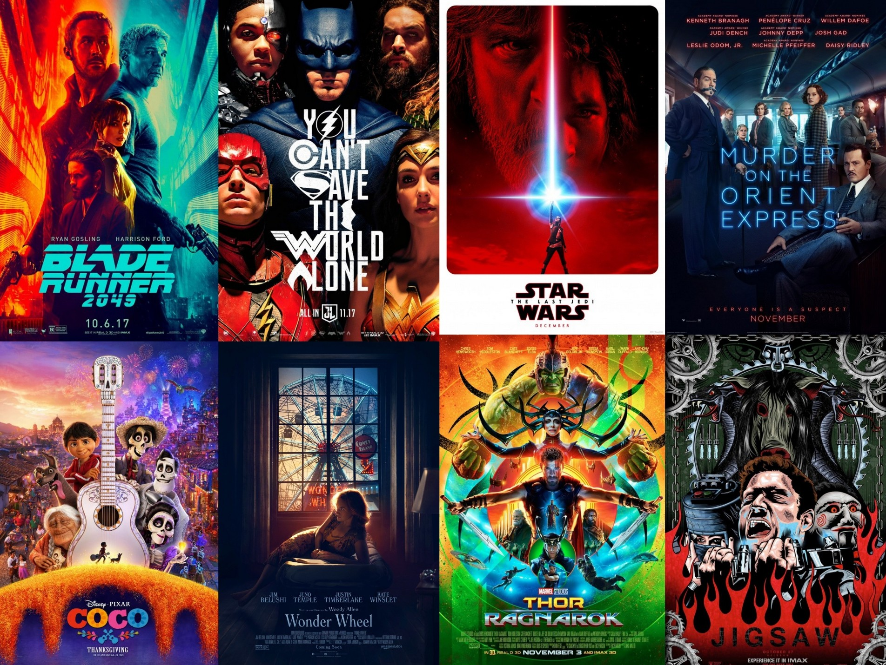

Elysium
"Elysium" es una película de ciencia ficción dirigida por Neill Blomkamp y protagonizada por Matt Damon y Jodie Foster. La película se desarrolla en el año 2154, donde la Tierra está superpoblada y empobrecida, mientras que los ricos viven en una estación espacial lujosa llamada Elysium. Me gusta esta película por su exploración de temas sociales y políticos, como la desigualdad económica y el acceso a la atención médica. Además, tiene impresionantes efectos visuales y una trama emocionante que mantiene al espectador cautivado.
El Hombre que Conocía el Infinito
"El hombre que conocía el infinito" es una película basada en la vida del matemático indio Srinivasa Ramanujan. La historia sigue su viaje desde la India hasta Cambridge, donde trabajó con el matemático G.H. Hardy y realizó importantes contribuciones a la teoría de los números. Me gusta por su emotiva representación de la vida y los logros de Ramanujan, así como por la exploración de su relación con Hardy.
